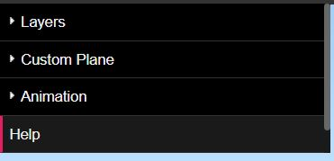
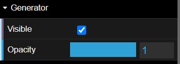

Instructions
The panel on the left side of the screen can be extended and toggled.
The layer items can be toggled on and off and made transparent with the slider:
 Further guidance can be found in the help button and layerpanel:

Have Fun and Explore!